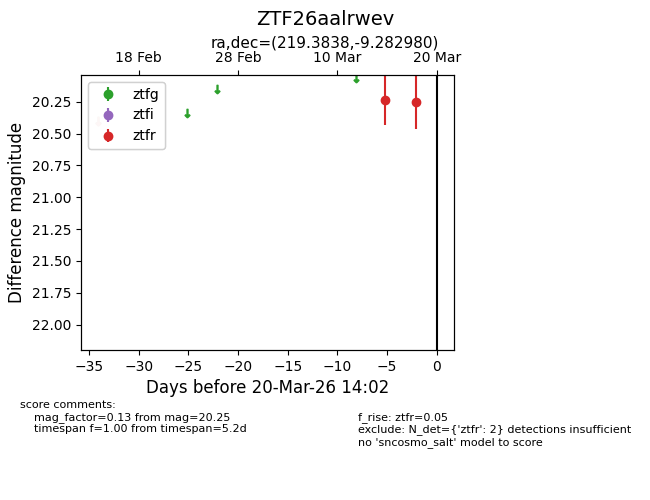
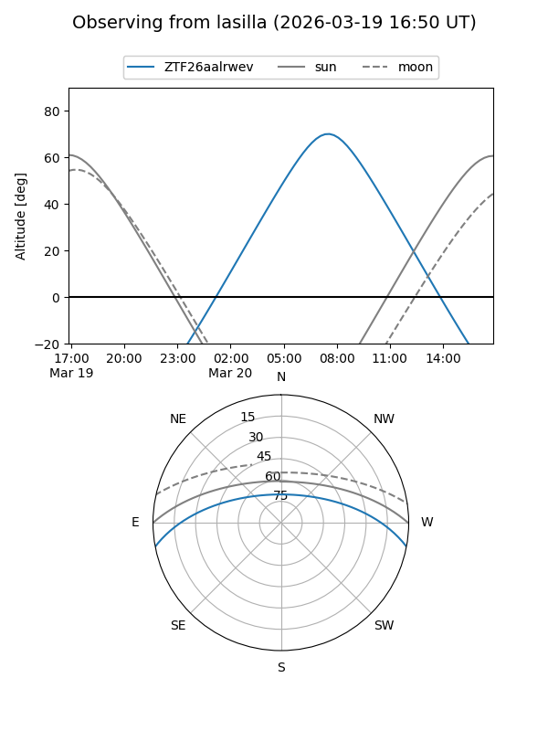
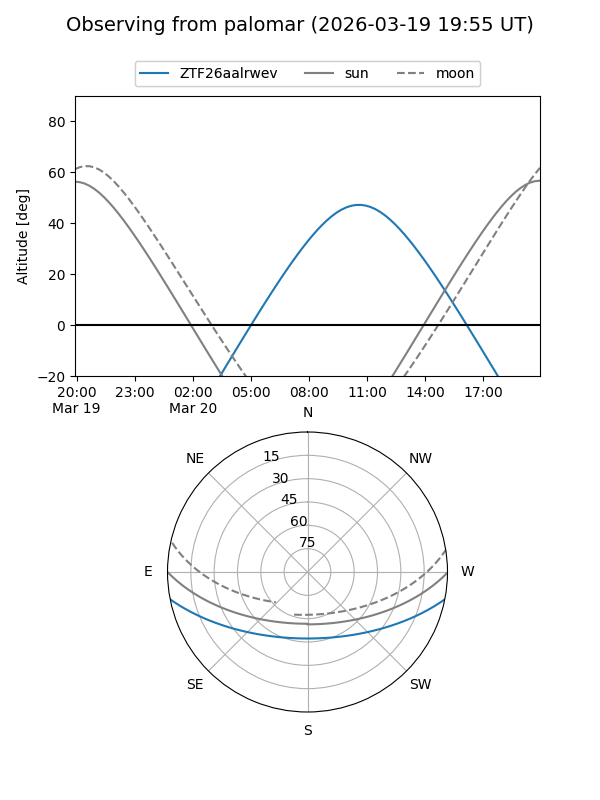
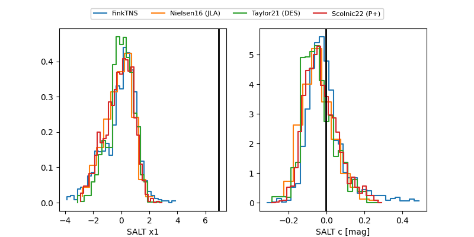

ZTF26aalrwev
Target ZTF26aalrwev at 2026-03-20 14:04
Aliases and brokers:
FINK: link
Lasair: link
ALeRCE: link
alt names
ZTF26aalrwev (ztf,fink_ztf)
Coordinates:
equatorial (ra, dec) = 219.3838,-9.28298
equatorial (HMS+DMS) = 14:37:32.11,-09:16:58.73
galactic (l, b) = (341.8315,+45.42468)
Flags:
Photometry:
last ztfr=20.25
2 ztfr detections
Lightcurve

Visibility


Additional plots
